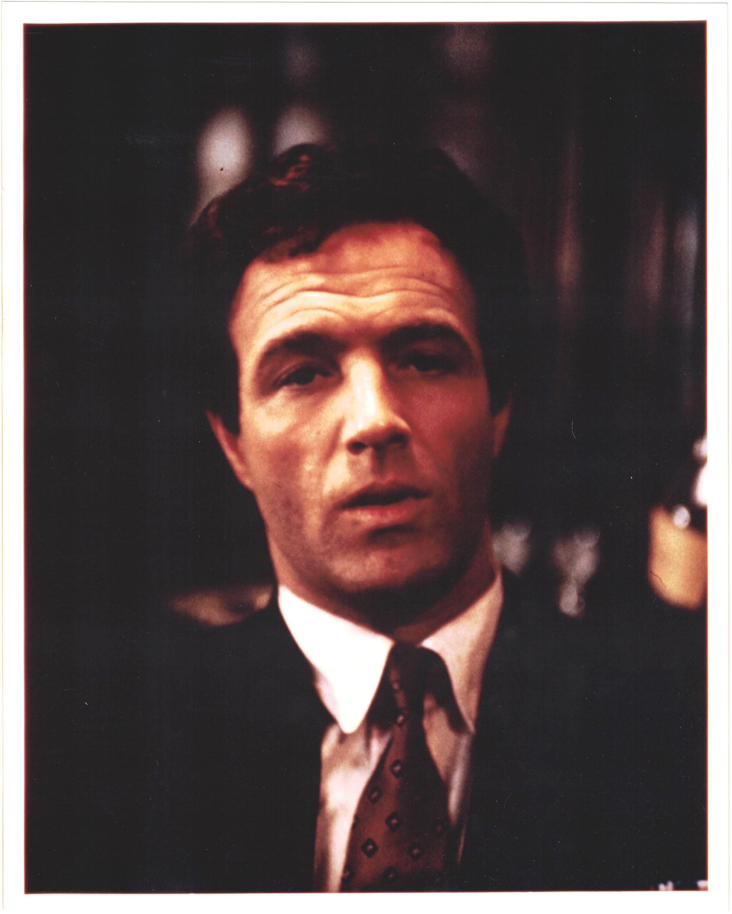

Product No. HEC-0056
$9.99
Shipping: $8.95
Description
8x10 color photograph
Full Description
James Caan (Deceased) was an American actor best known for his intense, charismatic performances in film and television. Born James Edmund Caan on March 26, 1940, in The Bronx, New York, he began acting in television before becoming a major Hollywood star. Caan achieved lasting fame as the hot-tempered Sonny Corleone in Francis Ford Coppola’s "The Godfather" (1972). His performance earned him an Academy Award nomination for Best Supporting Actor and became one of the most memorable roles in the landmark crime film. He also starred in a wide range of movies, including "Brian’s Song," "Rollerball," "The Gambler," "Misery," "Thief," "A Bridge Too Far," "Honeymoon in Vegas," and "Elf." In the television movie "Brian’s Song," Caan portrayed football player Brian Piccolo opposite Billy Dee Williams as Gale Sayers, earning widespread praise for his dramatic performance. Caan was known for playing tough, forceful characters, but he also demonstrated strong ability in comedy and more vulnerable dramatic roles. His portrayal of novelist Paul Sheldon in "Misery" opposite Kathy Bates introduced him to another generation of movie audiences. Later in his career, Caan continued appearing in films and television, including the series "Las Vegas." James Caan died on July 6, 2022, at age 82. His work in "The Godfather," "Brian’s Song," "Misery," and other major productions has made him an enduring figure in American cinema and a popular subject among collectors of Hollywood autographs and memorabilia.
Condition
Excellent condition